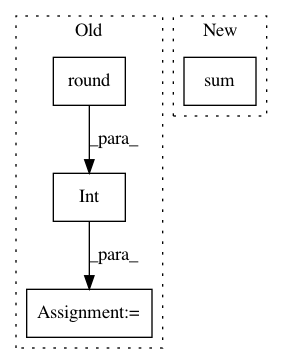

585dc138010729fbbd65231170096bac5e3aa5ed,examples/05_advanced/plot_localizer_mass_univariate_methods.py,,,#,29
Before Change
affine = get_affine(neg_log_pvals_anova_unmasked)
_, _, k_slice = coord_transform(0, 0, z_slice,
linalg.inv(affine))
k_slice = int(np.round(k_slice))
threshold = - np.log10(0.1) // 10% corrected
vmax = min(np.amax(neg_log_pvals_permuted_ols),
np.amax(neg_log_pvals_anova))
After Change
display_mode="z", cut_coords=[z_slice],
figure=fig, vmax=vmax, black_bg=True)
n_detections = (neg_log_pvals_permuted_ols_unmasked.get_data()
> threshold).sum()
title = ("Negative $\log_{10}$ p-values"
"\n(Non-parametric + max-type correction)"
"\n%d detections") % n_detections
In pattern: SUPERPATTERN
Frequency: 3
Non-data size: 4
Instances
Project Name: nilearn/nilearn
Commit Name: 585dc138010729fbbd65231170096bac5e3aa5ed
Time: 2017-02-17
Author: gael.varoquaux@normalesup.org
File Name: examples/05_advanced/plot_localizer_mass_univariate_methods.py
Class Name:
Method Name:
Project Name: WZBSocialScienceCenter/tmtoolkit
Commit Name: 098f69b7c2282a556fc0b57d37b70328457de834
Time: 2017-10-11
Author: markus.konrad@wzb.eu
File Name: tmtoolkit/lda_utils/evaluation_lda.py
Class Name: MultiprocEvaluationWorkerLDA
Method Name: fit_model_using_params
Project Name: rusty1s/pytorch_geometric
Commit Name: 631d4ee2ece28da70d6e22201129f39b4f1dc586
Time: 2020-10-26
Author: matthias.fey@tu-dortmund.de
File Name: torch_geometric/data/temporal.py
Class Name: TemporalData
Method Name: train_val_test_split